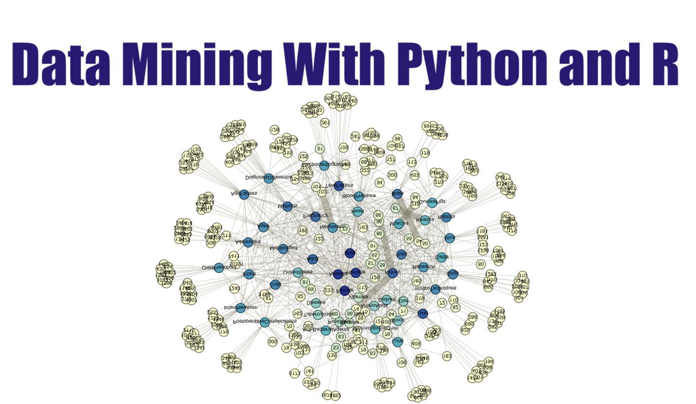

Welcome to my Data Mining With Python and R tutorials! In these tutorials, you will learn a wide array of concepts about Python and R programing in Data Mining. The PDF version can be downloaded from HERE.
Contents¶
- 1. Preface
- 2. Python or R for data analysis?
- 3. Getting Started
- 4. Data Exploration
- 5. Data Manipulation
- 6. Pre-processing procedures
- 7. Summary of Data Mining Algorithms
- 8. Dimension Reduction Algorithms
- 9. Regression Algorithm
- 10. Classification ALgorithms
- 11. Regularization ALgorithms
- 12. Resampling Algorithms
- 13. Developing Your Own R Packages
- 14. Developing Your Own Python Packages